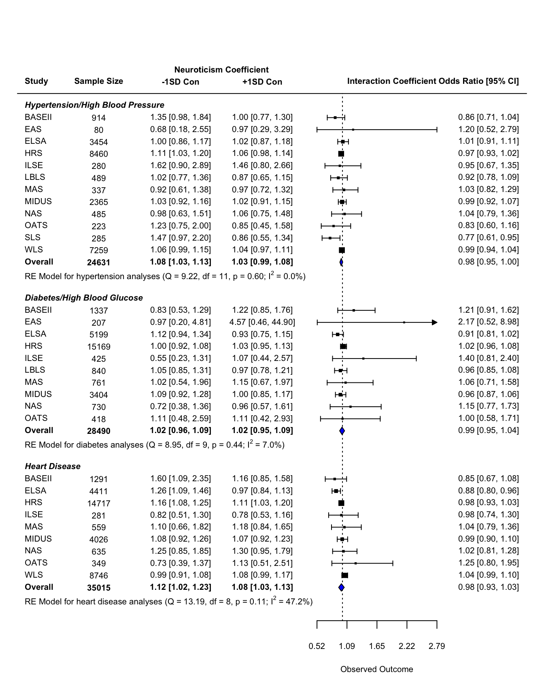

This document contains the forest plot summarizing the longitudinal analyses that controlled for self-rated health. These analyses were part of the pre-registration. However, post-registration, it was discovered that many studies did not have this variable. For the manuscript, we chose to remove self-rated health as a covariate in order to include all studies in the analyses. We repeated the analyses with self-rated health as a covariate using the studies that have this variable, as sensitivity analyses. The results are summarized here.

The following packages were used to generate this figure:
library(tidyverse)
library(metafor)
library(papaja)
library(here)The files needed for this table are available at osf.io/mzfu9 in the Meta Analysis Output folder.
First we load the meta-analysis objects. As we load them in, we rename some of the objects (as they were given the same name during creation).
load(here("chronic/meta output/hbp_long_srh.Rdata"))
meta.long.hbp = meta.int.mod3
lowc_long_ci.hbp = meta_lowc_ci_mod3
hghc_long_ci.hbp = meta_hghc_ci_mod3
load(here("chronic/meta output/diabetes_long_srh.Rdata"))
meta.long.diabetes = meta.int.mod3
lowc_long_ci.diabetes = meta_lowc_ci_mod3
hghc_long_ci.diabetes = meta_hghc_ci_mod3
load(here("chronic/meta output/heart_long_srh.Rdata"))
meta.long.heart = meta.int.mod3
lowc_long_ci.heart = meta_lowc_ci_mod3
hghc_long_ci.heart = meta_hghc_ci_mod3
rm(meta.int.mod3)
rm(meta_lowc_ci_mod3)
rm(meta_hghc_ci_mod3)The data frames contain the estimates and standard errors for each study, as well as confidence intervals. We bind these into a single large data frame.
data_long_hbp <- data_long_hbp %>%
# select relevant variables
dplyr::select(contains("name"), contains("mod3")) %>%
# remove rows with missing values
filter(!is.na(n_mod3)) %>%
# add column to indicate outcome
mutate(outcome = "hbp")
data_long_diab <- data_long_diab %>%
# select relevant variables
dplyr::select(contains("name"), contains("mod3")) %>%
# remove rows with missing values
filter(!is.na(n_mod3)) %>%
# add column to indicate outcome
mutate(outcome = "diabetes")
data_long_heart <- data_long_heart %>%
# select relevant variables
dplyr::select(contains("name"), contains("mod3")) %>%
# remove rows with missing values
filter(!is.na(n_mod3)) %>%
# add column to indicate outcome
mutate(outcome = "heart")
data_long_all <- data_long_hbp %>%
full_join(data_long_diab) %>%
full_join(data_long_heart) %>%
mutate(n_mod3 = printnum(n_mod3)) #format as integer with commasNext we calculate the bounds of the figure (along the x-axis), based on the data we know will be plotted. Then we use the known bounds to point to where we want the extra information. For this figure, extra information is the sample size, the estimate and confidence interval of the simple slopes of neuroticism at ±1SD conscientiousness.
After looking at the plot, we noticed that upper bound one of the confidence intervals (study: EAS, outcome: diabetes) is substantially larger than the other studies. To improve the aesthetic quality of the graph, we use the second largest upper bound as our limit for visualization. The exact numeric bounds are displayed in the figure.
# find maximum upper bound of confidence intervals
max.ci.long = exp(data_long_all$int_est_mod3 + 1.96*data_long_all$int_se_mod3)
max.ci.long = max.ci.long[order(max.ci.long, decreasing = T)][2]
# find minimum lower bound of confidence intervals
min.ci.long = min(exp(data_long_all$int_est_mod3 - 1.96*data_long_all$int_se_mod3))
range.long = max.ci.long-min.ci.long
#give some space on either side. These are the plot bounds
lower.long = min.ci.long-(range.long*2.5)
upper.long = max.ci.long+(range.long)
#estimate position of extra information
lower.long = min.ci.long-(range.long*2.5)
upper.long = max.ci.long+(range.long*.75)
#estimate position of extra information
# range of space between left side of plot and lowerbound of confidence intervals
pos.long = min.ci.long-lower.long
# break that into equal sections. I find that 11 works for one column of sample
# sizes and two columns of estimates and confidence intervals
pos.long = pos.long/11
#use the sections for figure out where you want each column to be in that space
pos.long = c(lower.long+3*pos.long,
lower.long+6*pos.long,
lower.long+9*pos.long)Now we calculated the needed space along the y-axis. First we determine how many extra rows we need between each “set” of analyses (in this case, between each chronic condition). We need two extra rows for specific information: the weighted average estimates and a label. From there, I added extra rows until the figure looked appealing. I ended up with 5 extra rows.
From there, I figure out which rows will be filled with each set of analyses. It’s important to remember that rows start from the bottom and as you move up the figure, the row number increases.
extra.space = 5
# which rows are for heart disease
total.heart = nrow(data_long_heart)
rows.heart = c(1, total.heart)
# which rows are for diabetes
total.diabetes = nrow(data_long_diab)
# skip row for diabetes summary, space, and heart title
rows.diabetes = c(rows.heart[2] + extra.space, rows.heart[2] + extra.space + total.diabetes - 1)
# which rows are for highblood pressure
total.hbp = nrow(data_long_hbp)
# skip row for hbp summary, space, title
rows.hbp = c(rows.diabetes[2] + extra.space, rows.diabetes[2] + extra.space + total.hbp - 1)The last step before beginning the plot is to set the font size and formatting. font = 1 is the non-bold, non-italic font.
cex.value = .65
par(font = 1)The final chunck builds the forest plot. Comments are included throughout as a guide.
forest(data_long_all$int_est_mod3, #estimate
data_long_all$int_se_mod3^2, #variance
xlim = c(lower.long, upper.long), #limits of x-axis, full figure
alim = c(min.ci.long, max.ci.long),
ylim = c(-1, nrow(data_long_all) + extra.space*2 + 2), # limits of y-axis
cex = cex.value, #font size
slab = data_long_all$name, #study label
transf=exp, #transformation to estimates (takes from log odds to odds ratio)
refline = 1, # where is the vertical line representing the null?
# which rows do I fill in. Remember, data frame goes from top to bottom, but row numbers on
# figure go from bottom to top
rows = c(rows.hbp[2]:rows.hbp[1],
rows.diabetes[2]:rows.diabetes[1],
rows.heart[2]:rows.heart[1]),
# what extra information is added?
ilab = data_long_all[,c("n_mod3", "neur_lowc_ci_mod3", "neur_hghc_ci_mod3")],
# where does extra information go?
ilab.xpos = pos.long)
# add weighted average effects polygon
addpoly(meta.long.hbp, row=rows.hbp[1]-1, cex = cex.value, transf = exp, mlab = "", col = "blue")
addpoly(meta.long.diabetes, row=rows.diabetes[1]-1, cex = cex.value, transf = exp, mlab = "", col = "blue")
addpoly(meta.long.heart, row=rows.heart[1]-1, cex = cex.value, transf = exp, mlab = "", col = "blue")
### add text with Q-value, dfs, p-value, and I^2 statistic for subgroups
text(x = lower.long, y = rows.hbp[1]-2.25, pos=4, cex = cex.value,
bquote(paste("RE Model for hypertension analyses (Q = ",
.(formatC(meta.long.hbp$QE, digits=2, format="f")),
", df = ", .(meta.long.hbp$k - meta.long.hbp$p),
", p = ", .(formatC(meta.long.hbp$QEp, digits=2, format="f")), "; ", I^2, " = ",
.(formatC(meta.long.hbp$I2, digits=1, format="f")), "%)")))
text(x = lower.long, y = rows.diabetes[1]-2.25, pos=4, cex = cex.value,
bquote(paste("RE Model for diabetes analyses (Q = ",
.(formatC(meta.long.diabetes$QE, digits=2, format="f")),
", df = ", .(meta.long.diabetes$k - meta.long.diabetes$p),
", p = ", .(formatC(meta.long.diabetes$QEp, digits=2, format="f")), "; ", I^2, " = ",
.(formatC(meta.long.diabetes$I2, digits=1, format="f")), "%)")))
text(x = lower.long, y = rows.heart[1]-2.25, pos=4, cex = cex.value,
bquote(paste("RE Model for heart disease analyses (Q = ",
.(formatC(meta.long.heart$QE, digits=2, format="f")),
", df = ", .(meta.long.heart$k - meta.long.heart$p),
", p = ", .(formatC(meta.long.heart$QEp, digits=2, format="f")), "; ", I^2, " = ",
.(formatC(meta.long.heart$I2, digits=1, format="f")), "%)")))
#bold font
par(font = 2)
# add "overall"" label to each set of analyses
text(lower.long, y = c(rows.hbp[1]-1, rows.diabetes[1]-1, rows.heart[1]-1), pos = 4, cex = cex.value, "Overall")
# add overall sample sizes for each set of analyses
text(x = pos.long[1], y = rows.hbp[1]-1, cex = cex.value, printnum(sum(data_long_hbp$n_mod3), int=T))
text(x = pos.long[1], y = rows.diabetes[1]-1, cex = cex.value, printnum(sum(data_long_diab$n_mod3), int = T))
text(x = pos.long[1], y = rows.heart[1]-1, cex = cex.value, printnum(sum(data_long_heart$n_mod3), int =T))
# add weighted average simple slopes for each set of analyses
text(x = pos.long[2], y = rows.hbp[1]-1, cex = cex.value, lowc_long_ci.hbp)
text(x = pos.long[2], y = rows.diabetes[1]-1, cex = cex.value, lowc_long_ci.diabetes)
text(x = pos.long[2], y = rows.heart[1]-1, cex = cex.value, lowc_long_ci.heart)
text(x = pos.long[3], y = rows.hbp[1]-1, cex = cex.value, hghc_long_ci.hbp)
text(x = pos.long[3], y = rows.diabetes[1]-1, cex = cex.value, hghc_long_ci.diabetes)
text(x = pos.long[3], y = rows.heart[1]-1, cex = cex.value, hghc_long_ci.heart)
# column labels
text(lower.long, nrow(data_long_all) + extra.space*2 + 1,
"Study", cex = cex.value, pos = 4)
text(upper.long, nrow(data_long_all) + extra.space*2 + 1,
"Interaction Coefficient Odds Ratio [95% CI]", cex = cex.value, pos=2)
text(pos.long[1], nrow(data_long_all) + extra.space*2 + 1,
"Sample Size", cex = cex.value)
text(pos.long[2], nrow(data_long_all) + extra.space*2 + 1,
"-1SD Con", cex = cex.value)
text(pos.long[3], nrow(data_long_all) + extra.space*2 + 1,
"+1SD Con", cex = cex.value)
text((pos.long[2]+pos.long[3])/2, nrow(data_long_all) + extra.space*2 + 2,
"Neuroticism Coefficient", cex = cex.value)
#bold and italic font, plus bigger text
par(font = 4)
# outcome labels
text(lower.long, rows.hbp[2] + 1,
"Hypertension/High Blood Pressure", cex = cex.value, pos = 4)
text(lower.long, rows.diabetes[2] + 1,
"Diabetes/High Blood Glucose", cex = cex.value, pos = 4)
text(lower.long, rows.heart[2] + 1,
"Heart Disease", cex = cex.value, pos = 4)